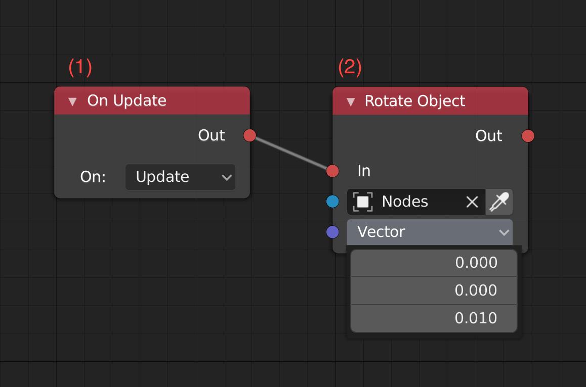

Traits
In this tutorial, we will learn about what is Traits, what are different types, how to create them and rotate different cube from different traits.
Goal:
Trait is conecpt in Iron means a piece of logic attached to object or scene.
There are 4 different types of traits:
-
Haxe Trait: Haxe Text-based scripting trait that can be used to write game-play logic in.
-
Logic Nodes Trait: Visual scripting trait for writing game-play logic in. It is similar to UE4's Blueprints.
-
Canvas Trait: Trait for UI, canvas can be made using Armory2D, but since it use
Json, you can create layout yourself withoutArmory2D. -
WebAssembly(WASM): WebAssembly can also be used as scripting trait, It can be written in
Rust/C/C++and than complied toWASMto use it in Armory (WASM will only work with Krom target). WASM is very useful when it comes to plugins, you can use Libraries made inRust/C/C++and compile it to WASM and then use it inArmoryandKha. Two examples that are used inArmorPaint: Texture-synthesis(Rust), Chips(C).
Let's get started, fire up armory3D project. We will create Trait in following order:
Haxe
Create a cube, name it Haxe and place it wherever you want. Select it and go to Scene - Armory Scene Trait.
- Click
+, selectHaxeand clickOK,Haxetrait placeholder should appear. - Click
New Scriptand name the script of your choice, just make sure the first letter is capital(HaxeScriptfor me). - Finally hit
Edit Script, you system default IDE should now open up with the project.
Edit the script:
// In HaxeScript.hx
package arm;
//Imports
import iron.object.Object;
import iron.math.Vec4;
import iron.Scene;
class HaxeScript extends iron.Trait {
//Initialise haxeCube as Object
var haxeCube:Object;
public function new() {
super();
//NotifyOnInit function get excuted when the 'trait' is initiated.
notifyOnInit(function() {
//Get haxeCube Object from active Scene.
haxeCube = Scene.active.getChild("Haxe");
});
//NotifyOnUpdate function get excuted every frame.
notifyOnUpdate(function() {
//Rotate haxeCube with Vec4(x, y, z) and speed.
haxeCube.transform.rotate(new Vec4(0.0, 0.0, 1.0), 0.01);
});
}
}
Now, if you were to play it, you should see Haxe cube rotating!.
Logic Node
Create a cube, name it Nodes and place it wherever you want. Select it and go to Scene - Armory Scene Trait.
- Click
+, selectNodesand clickOK,Nodestrait placeholder should appear. - Change your editor type to
Logic Node Editorand click+New. - A node tree should be created, you can rename it by editing the text field(
LogicNodesfor me). - Go back to
Scene - Armory Scene trait, select you logic nodes place holder and clickTree, selectLogicNodesin dropdown.
and now add following nodes(Shift + A):

- On Update: It is triggered every tick.
- Rotate object on axis, speed is set directly in vector.
Now if you play it, Nodes cube should start spinnig.
Wasm
Create a cube, name it Wasm and place it wherever you want. Select it and go to Scene - Armory Scene Trait.
- Click
+, selectWasmand clickOK,Wasmtrait placeholder should appear. - Click
New Module, and it should re-direct you to WebAssembly Studio, selectEmpty Rust Project(you can select c/c++ too) and clickCreate. - Enter
Rust/C/C++code and clickBuildand there should bemain.wasminoutfolder, right-click and download it. - Put outputed
main.wasminBundledfolder (create one, if there is no bundled folder). - Go back to
Scene - Armory Scene Trait, select previously createdWasmplaceholder, clickRefreshand selectmaininModuledropdown.
// Rust example of rotating cube
// main.rs
extern {
fn notify_on_update(f: extern fn() -> ()) -> ();
fn get_object(name: *const i8) -> i32;
fn set_transform(object: i32, x: f32, y: f32, z: f32, rx: f32, ry: f32, rz: f32, sx: f32, sy: f32, sz: f32) -> ();
}
#[no_mangle]
pub extern "C" fn update() -> () {
unsafe {
let name = std::ffi::CString::new("Wasm").unwrap();
let object = get_object(name.as_ptr());
static mut rot: f32 = 0.1;
rot += 0.01;
set_transform(object, 0.0, 0.0, 0.0, 0.0, 0.0, rot, 0.5, 0.5, 0.5);
}
}
#[no_mangle]
pub extern "C" fn main() -> i32 {
unsafe {
notify_on_update(update);
}
return 0;
}
Now if you play it then you should have spinny rusty wasm cube.
Canvas
- Click
+, selectUIand clickOK,Canvastrait placeholder should appear. - Click
New Canvasand enter the name and clickEdit Canvas. - Add
Textelement and set text asHello World from Canvas!and save it.
If you play it now, you should see Hello World from Canvas.
Check Canvas tutorial for more!
🎉There we go! We covered the basics of Traits!🎉
If anything goes wrong, then you can check the source code